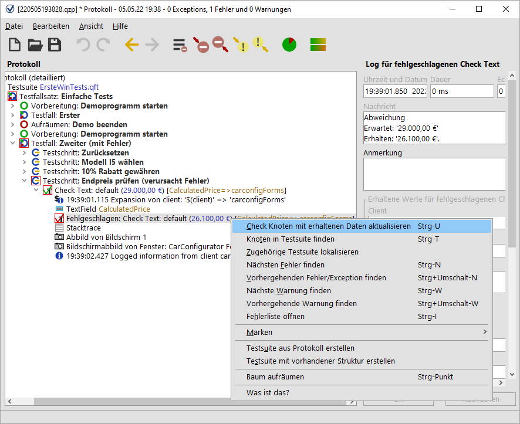
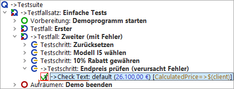

| Version 6.0.3 |
Über die Schaltfläche In Protokoll springen (siehe Fehlermeldung in Abbildung Abbildung 23.12) wird das Protokoll direkt bei dem entsprechenden Knoten geöffnet.
Neben der eigentlichen Fehlermeldung wurden etliche weitere Informationen zur Testumgebung zum Zeitpunkt des Fehlers protokolliert. Neben Bildschirmabbildern zum Fehlerzeitpunkt enthält das Protokoll unter dem Knoten, der den Fehler verursachte, eine Liste der gebundenen Variablen (Stacktrace). Auf die Nützlichkeit des Stacktrace werden wir zu einem späteren Zeitpunkt eingehen (Die Variablen Definitionen Tabelle).
Beim vorliegenden Fehler wird der falsche Wert im 'Check Text' Knoten der Testsuite erwartet. Zur Fehlerbehebung muss dieser durch den tatsächlich angezeigten ersetzt werden. Dies geht bei einem 'Check' mit festem Wert, um den es sich hier handelt, am einfachsten, indem Sie
|
|  | ||
|
| Abbildung 23.13: Check Knoten mit erhaltenen Daten aktualisieren | ||
QF-Test navigiert zum betroffenen 'Check Text' Knoten in der Testsuite und aktualisiert den Wert des Attributs 'Text' anhand der aus dem SUT ausgelesenen Daten.
|
|  | ||
|
| Abbildung 23.14: Korrigierter Check Knoten | ||
Der Knoten enthält nun zwar den korrekten Wert, ist aber immer noch rot umrandet, da er noch nicht wieder ausgeführt wurde. Dies wollen wir nun tun.
QF-Test führt den Rest der Testsuite aus. In unserem Fall sind das der 'Check Text' und der 'Aufräumen' Knoten. Anschließend informiert Sie QF-Test, dass ein Fehler aufgetreten ist. Diesen haben wir allerdings bereits während des Testlaufs behoben.
Ins Protokoll springen: Falls Sie das Protokoll an der Stelle, an der sich die Testausführung gerade befindet, öffnen wollen, brauchen Sie aus dem Debugging Modus heraus nur den Menüpunkt »Debugger«-»Jump to Run-Log« anzuklicken oder das Tastaturkürzel [Strg-J] zu drücken. Wenn Sie einfach nur das Protokoll öffnen wollen, ohne an die aktuelle Stelle zu springen, steht Ihnen [Strg-L] zur Verfügung, was auch nach Ende des Testlaufs weiterhin funktioniert.
| Letzte Änderung: 6.9.2022 Copyright © 2002-2022 Quality First Software GmbH |